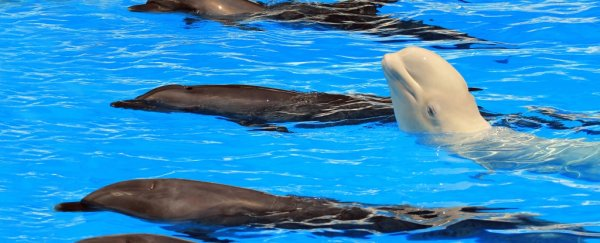

What's so special about belugas anyways?
EVERYTHING! In a world filled with overhyped dolphins, be a beluga. Belugas are some of the coolest marine mammals you could ever see.
Source: Wikipedia
The beluga whale (/bɪˈluːɡə/) (Delphinapterus leucas) is an Arctic and sub-Arctic cetacean. It is one of two members of the family Monodontidae, along with the narwhal, and the only member of the genus Delphinapterus. It is also known as the white whale, as it is the only marine mammal of this colour; the sea canary, due to its high-pitched calls; and the melonhead, though that more commonly refers to the melon-headed whale, which is an oceanic dolphin.
The beluga is adapted to life in the Arctic, so has anatomical and physiological characteristics that differentiate it from other cetaceans. Amongst these are its all-white colour and the absence of a dorsal fin, which allows them to swim under ice with ease. It possesses a distinctive protuberance at the front of its head which houses an echolocation organ called the melon, which in this species is large and deformable. The beluga's body size is between that of a dolphin's and a true whale's, with males growing up to 5.5 m (18 ft) long and weighing up to 1,600 kg (3,530 lb). This whale has a stocky body. A large percentage of its weight is blubber (subcutaneous fat), as is true of many cetaceans. Its sense of hearing is highly developed and its echolocation allows it to move about and find breathing holes under sheet ice.
Belugas are gregarious and form groups of up to 10 animals on average, although during the summer, they can gather in the hundreds or even thousands in estuaries and shallow coastal areas. They are slow swimmers, but can dive to 700 m (2,300 ft) below the surface. They are opportunistic feeders and their diets vary according to their locations and the season. The majority of belugas live in the Arctic Ocean and the seas and coasts around North America, Russia and Greenland; their worldwide population is thought to number around 150,000. They are migratory and the majority of groups spend the winter around the Arctic ice cap; when the sea ice melts in summer, they move to warmer river estuaries and coastal areas. Some populations are sedentary and do not migrate over great distances during the year.